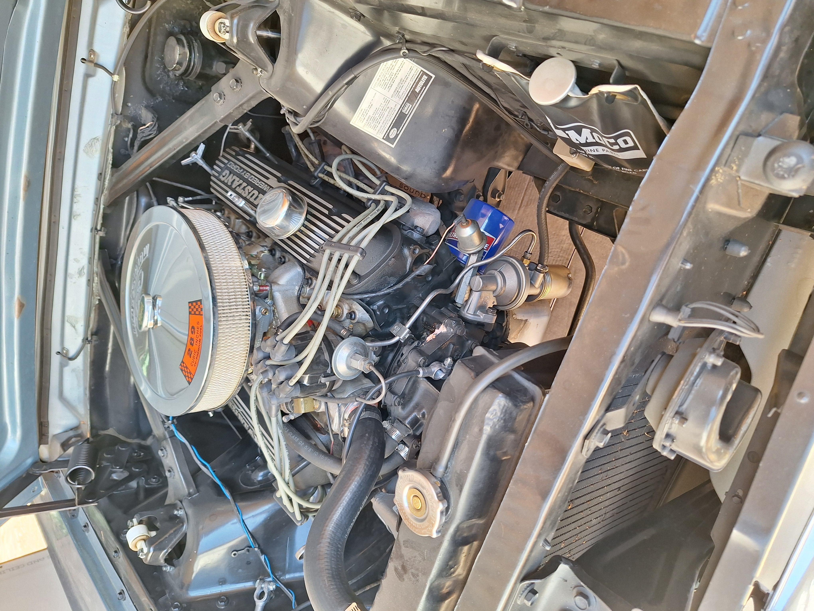

To start, there is a lot of cool history behind the Mustang. In 1965, my grandma got the Mustang as her first car when she turned 16. She drove the car pretty much every day.
Through the years, she went to many car shows, cruises. She wasn't alone, as my grandpa and my dad had their own Mustangs.
I do not know what Mustang my grandpa had, but my dad had a very nice dark blue 1965 Fastback (See the image below).

As you can see, it was very cool. However, in some time around 2012, my dad had to sell it. Anyway, the three of them went to the car shows and cruises together. Most of the
cruises and shows were hosted by the Early Mustang Club of Colorado Inc., which they were all members of.
My grandma even became the president of the club in 1993.
Since my grandpa got rid of his car as well, my grandma stopped going to car shows and cruises. During some time around 2014, her Mustang began having mechanical issues with the master
cylinder and a couple other minor things. Despite recently upgrading some parts inside of the engine, my grandpa didn't feel like fixing it. He put the car into a shed and sealed it up
to prevent sunlight from getting in. The shed was only opened a few times during those 10 years, when me and my sister wanted to see the Mustang.
Other than that, the car wasn't touched. Since then, me and my dad
have wanted to get our hands on that Mustang.
This is where we get to the present. In the summer of 2024, my mom convinced my dad to talk to his mom about the car. My grandma agreed to give us the car, with the condition that she can drive it every now and then. Not long after she agreed, we rented a trailer and went to her house. When we got there, we had to take a wall off of the shed in order to reach the engine (See image below).
We began trying to start the car, but it wasn't even cranking. After two trips to a store to get a new battery, the car began to crank. We got the car started and onto the trailer after a long process of trial and error.
Now that the car was ours, we began working on the problems that we knew existed. We thought it would be pretty easy and simple to get the car running normally, and we'd only have to replace the brakes. We were none the wiser. Cleaning the carburetor led to new a small fuel filter, PCV valve, and breather. After starting the car up a few more times, we were staring at the engine trying to think of what else might need to be fixed. While we were staring, gas starts spraying out of the fuel line that goes from the big fuel filter into the small fuel filter. This was a concerning event, so we replaced the entire fuel system including the tank. Also, oil was leaking out of the valve covers. Not only that, but the sparkplugs were drenched in oil. To hopefully fix this issue, we replaced the valve cover gaskets, and will eventually replace the sparkplugs.The most recent replacement we've done is the suspension system (with adjustable shocks!!). This is the first step of our mission to replace the breaks and put new wheels on the car. With the new suspension in, we can swap the old brakes with new drum brakes. Once the brakes are on, we got 17" x 7" wheels for the front, and 17" x 8" wheels for the back. The next thing on the list will be replacing the gasket between the engine and transmission, since it is leaking. If nothing else is broken after that(a big if), we will order headers for the engine and an interior replacement kit.
There are a lot of things I haven't mentioned about the Mustang:
it's a coupe, it has the 289 V8, it's unfortunately the 3-speed automatic, the paint is in extremely good condition, all of the glass is still the original glass from factory, and it has 99k miles on it.